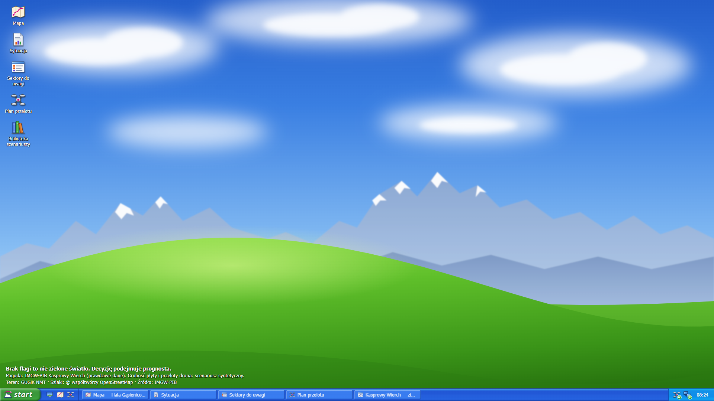
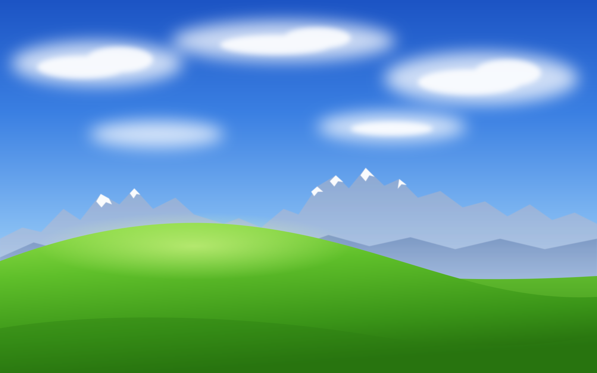

Wie, czego nie wie, i mówi, gdzie polecieć, żeby się dowiedzieć.
HackYeah 2026 · Defence
Postać fikcyjna. Projekt nie jest powiązany z TOPR.
AvaKomunikator to komunikator wymyślony na potrzeby filmu.
Pogoda: IMGW-PIB, stacja Kasprowy Wierch (dane prawdziwe). Źródłem pochodzenia danych jest Instytut Meteorologii i Gospodarki Wodnej – Państwowy Instytut Badawczy. Dane zostały przetworzone. · Grubość płyty i przeloty drona: dane syntetyczne. · Teren i ortofotomapa: GUGiK · Szlaki: © współtwórcy OpenStreetMap · Symulacje: AvaFrame (EUPL-1.2)
Głos Staszka: syntezator mowy.